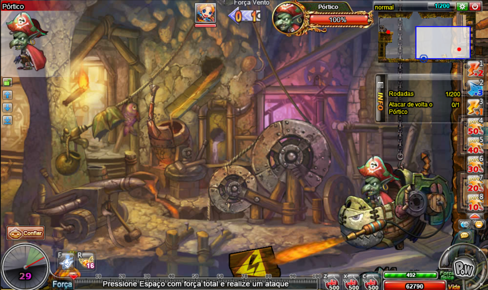
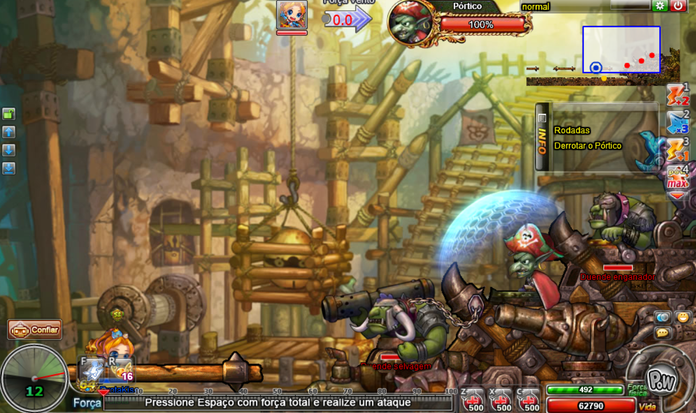
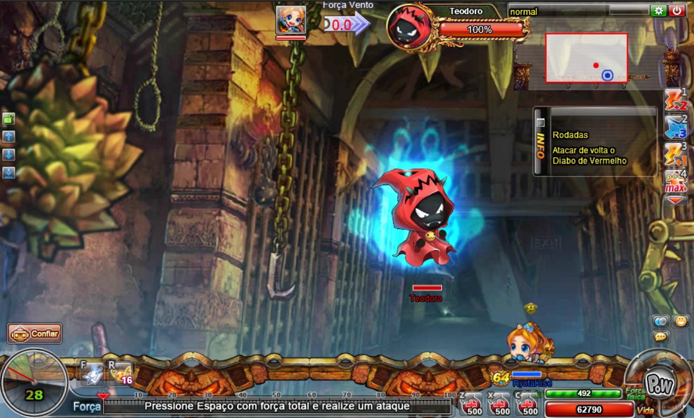
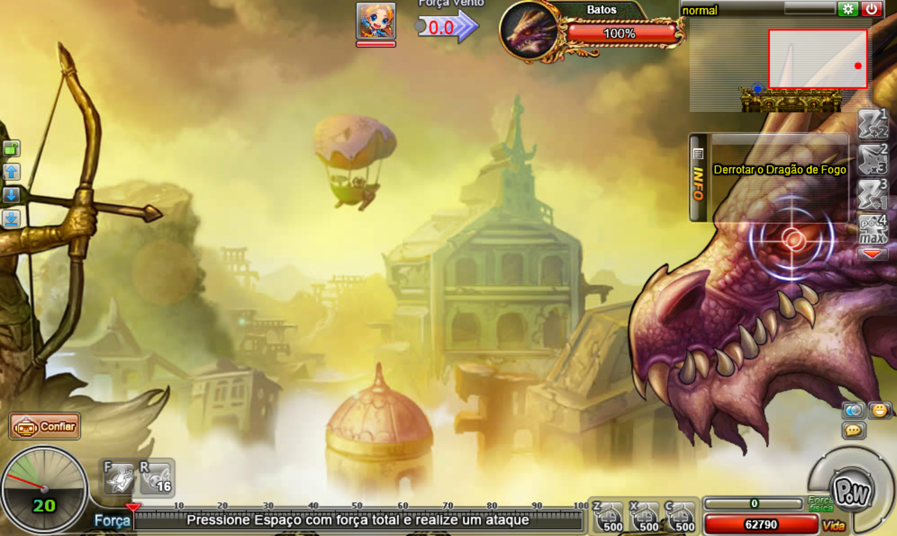

A instância do covil do dragõ é considerada a mais difícil e demorada do ddtank, aqui você enfrentará uma série de desafios e no último estágio enfrentará o grande dragão Batos.
O covil do dragão possue as dificuldades: normal, difícil e heróica.
Aqui todas as dificuldades possuem a mesma quantidade de estágios, indo do 1 ao 4.

No estágio 1 você enfrentará Pórtico, um goblim maligno.
A cada rodada, os escravos goblins localizados no canto superior esquerdo do mapa giram uma manivela e sobem Pórtico, que troca constantemente de arma até chegar no topo, onde não trocará mais.
Derrote pórtico para avançar ao próximo estágio.
A partir da terceira rodada, o escudo que protege o goblim que gira a manivela se desfaz e você pode atacá-los. Derrote-os e Pórtico voltará para o nível mais baixo de suas armas.

No estágio 2 você enfrentará Pórtico novamente, mas agora ele possui um escudo que o protege e se juntará com 2 escravos goblins.
Derrote os 2 escravos goblins e o escudo de Pórtico irá se desfazer, ficando frágil a ataques.
Derrote Pórtico pela segunda vez para avançar ao próximo estágio.

No estágio 3 você enfrentará Teodoro, uma espécie de fantasma maligno.
Derrote Teodoro para avançar ao próximo estágio.
Esse estágio é bem complicado de se passar sozinho, tente passar com o maior número de pessoas possíveis caso você não seja forte.
Teodoro realiza uma série de ataques insuportáveis para atrapalhar você e sua equipe, aqui vai algumas dicas para facilitar as coisas:
Quando Teodoro prender algum membro da equipe no caixão, priorize quebrá-lo imediatamente.
Teodoro também pode realizar um ataque mágico que manda um membro da equipe para baixo de um peso gigante, destrua o peso ou o personagem sofrerá hit kill.
Após sofrer uma grande quantia de dano, Teodoro invoca uma espécia de ferro quente que ao encostar no personagem, o faz correr em diração a borda do mapa. Então, tome cuidado para não morrer de queda, evite ficar muito próximo das pontas da plataforma.

No estágio 4, você enfrentará Batos, um dragão gigante e muito poderoso.
Batos é imune a dano, porém seu olho é vulnerável, portanto você deve mirar seus ataques nele para drenar sua vida.
Nesse estágio, você contará com a ajuda do aventureiro Thomas.
Depois de sofrer uma grande quantia de dano, Batos cairá e perderá sua imunidade, podendo sofrer dano de qualquer lugar. Além disso, Thomas atacará com bombas e causará uma grande quantia de dano ao dragão
Após derrotar Batos, parabéns! Você terá completado a instância Covil do Dragão.
Derrotar Batos é mais demorado do que difícil, portanto tente passar com o máximo de pessoas possívels na equipe.
Tome cuidado com seu ataque de fogo, quando Thomas lançar uma bomba de gelo, você e sua equipe deverá lançar +2 gelos no locar onde Thomas acertou, criando assim uma barreira de gelo que bloqueia este ataque. Caso você erre, o ataque de fogo causará muito dano a toda a equipe.